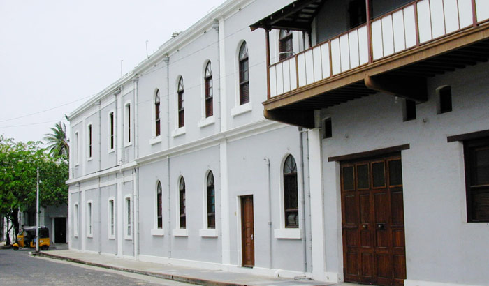
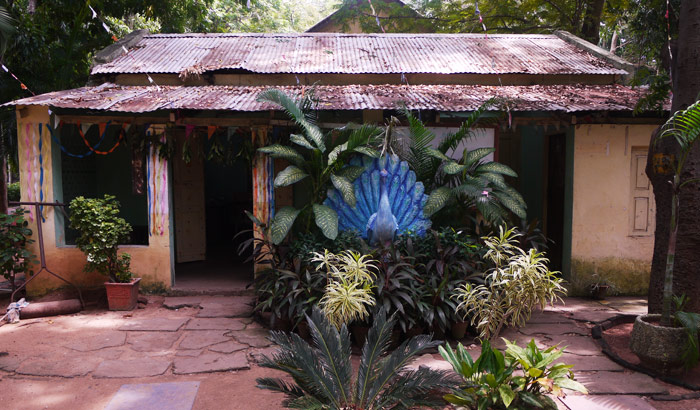
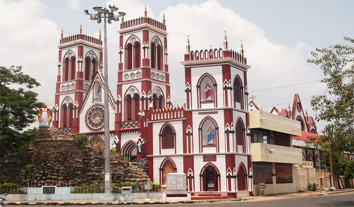
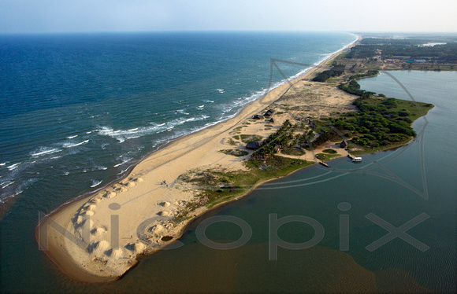

Department of Mass Communication
1. Aurobindo ashramPondicherry is synonymous with the Aurobindo Ashram. Founded by Sri Aurobindo and Mirra Alfassa (The Mother) in 1926, it is one of the major highlights of Pondicherry and is visited by thousands of people from all over the world. The ashram is also the place of Samadhi of Sri Aurobindo and The Mother. |
 |
2. Botanical gardenFeaturing six gorgeous fountains, a large aquarium with ornamental fishes, Japanese rock, dancing fountain and a beautiful children's train, the Botanical Garden of Pondicherry is truly an unmissable attraction. Established in the year 1826 by C.S. Perrotet, this 22-acre park is located favourably near the southern entrance of Pondicherry's New Bus Stand. |
 |
3. Church of sacred HeartThe Basilica of the Sacred Heart of Jesus is one of the highly revered religious places in Pondicherry and is located on the south boulevard of the town. This beautiful church is an excellent example of Gothic architecture and is adorned with colourful stained glass panels illustrating the life events of Jesus Christ. |
 |
4. Paradise beachWith an unspoilt and vast shoreline that is lined with dense palm groves, this Paradise beach truly exudes romance at every step. Frequented by beach lovers and honeymoon couples from all corners of the country and beyond, this beach stretches over several miles. Located along Cuddalore Main Road, approximately 8 kilometres from the city centre, this beach is easily accessed by boat. |
 |
5. AurovilleFounded in 1968 by Mirra Alfassa, also known as ‘The Mother’, Auroville is an experimental township or a universal town. Designed by famous architect Roger Anger, Auroville is a must-visit attraction of Pondicherry where people of different nationalities, cultures and beliefs live together in harmony. |
 |
Register Number: 15386045

Subscribe